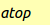
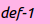

Organize things for your book
In this tutorial, you're going to learn how to organize things you want to have in your book and how to amplify them with Joytan's features such as automatic translation and automatic dictionary-lookup.
The structure of Entry
{kind=link}
Your book will consist of a number of "Entry", which is just like a dictionary entry. The structure of an Entry is a tree structure of depth 2, constructed with three sections; "atop", "def", and "ex".
An Entry must have one and only one "atop" () section, which is placed on the top of its sections and represents the Entry like its title and heading.
"def" () will be used to overwrite and store the definitions of a word in the section if possible when you use automatic dictionary-lookup feature, but other than that you can use "def" section to store any Entry's item as it's like a bulleted list even if it's not a definition. The default number of definitions per an Entry is set to 1.
Probably you may only use "ex" ( )
section to store word examples when you use automatic dictionary-lookup.
The default number of examples per a definition is set to 0 so you
cannot see it unless you increment the number on the Preferences.
)
section to store word examples when you use automatic dictionary-lookup.
The default number of examples per a definition is set to 0 so you
cannot see it unless you increment the number on the Preferences.
The number of "def" and "ex" is shared over all of entries (EntryList). You can change the values from Preferences.
Using Spreadsheet
{kind=link}
One of the facts that makes Joytan simple and easy to use is it uses a comma-separated value (CSV) file as its core data file.. For the reason, you can write and edit the entries of your book with common spreadsheet editor, such as Google Sheets and Excel, instead of launching Joytan. Furthermore, with Google Sheets, you can collaborate with others to make a book anywhere, anytime.
Load & Save
You can open your CSV file in Joytan from File/Open (shortcut: Ctrl+O). After editing the content of the file, don't forget to save the content on Joytan. You can save it from File/Save (shortcut: Ctrl+S).
Automatic dictionary-lookup
This is the feature where the statement: "Joytan is made for language-learners" comes from and the reason why Joytan uses a depth-2 tree structure. You can activate the feature by clicking the button at the bottom of the Welcome Page. Currently, Joytan is able to automatically download dictionary entries from Wiktionary and Dictionary.com.Automatic translation
Joytan is able to translate the text in Entry's sections using Google Translation. You can activate the feature by clicking the button at the bottom of the Welcome Page.Next
Alright, now you've passed everything you want in your book to Joytan and completed the most laborious part of Joytan.
You are ready to create both of your original audiobook and textbook. If you want both of them, I suggest you make an audiobook first because the process of making textbooks is extremely fast (although downloading online images for a textbook may take considerable time) but you will have to wait for a few minutes until Joytan finishes making your audiobook.
Next tutorial for making an audiobook... [Let's make audiobooks!]
Next tutorial for making a textbook... [Let's make textbooks!]